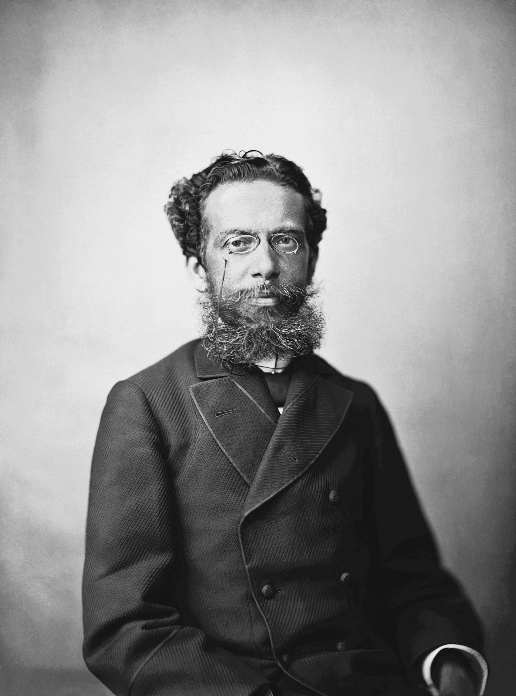
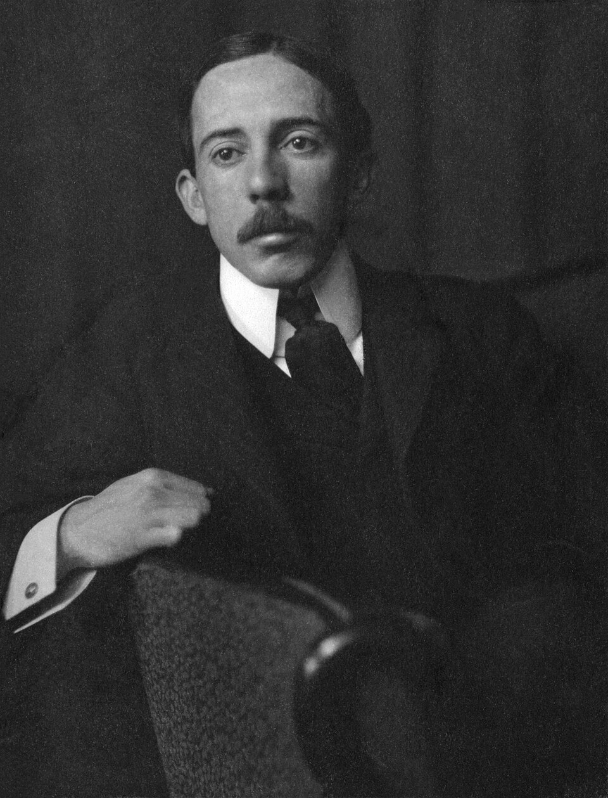
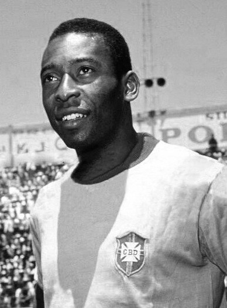
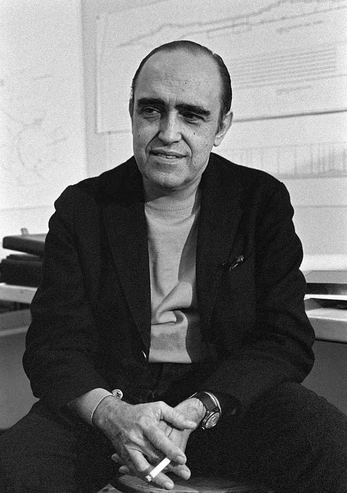
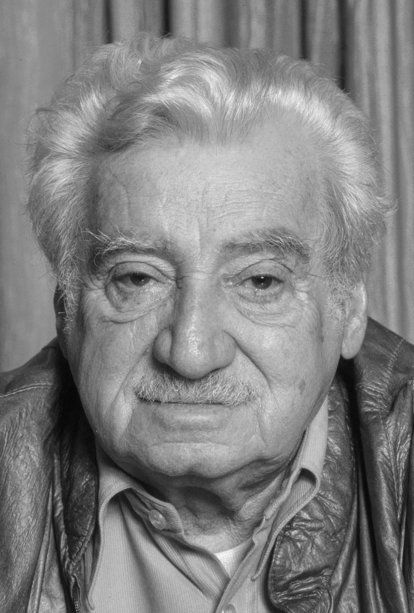
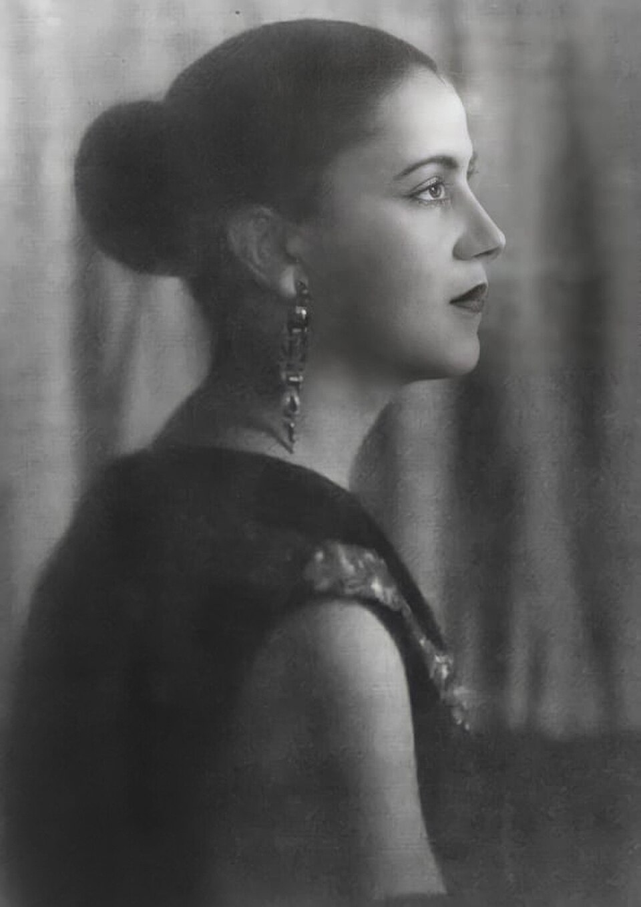

Personalidades Brasileiras
O Brasil é berço de grandes personalidades que projetaram a imagem do país no mundo através de suas trajetórias brilhantes nas artes, na literatura, na ciência e no esporte. Conheça um pouco sobre alguns desses nomes inesquecíveis:
Quem são eles
- Machado de Assis: De origem humilde e superando incontáveis desafios, tornou-se o principal representante do realismo brasileiro. Atuou como romancista, contista, dramaturgo, poeta e cronista, além de ser o fundador e primeiro presidente da Academia Brasileira de Letras (ABL).
- Alberto Santos Dumont: Conhecido mundialmente como o "pai da aviação", mudou-se jovem para Paris para aprofundar seus estudos em ciências, engenharia e mecânica. Foi o responsável por projetar o primeiro balão dirigível a contornar a Torre Eiffel e, em 1906, entrou para a história ao pilotar o 14-bis no Parque de Bagatelle.
- Pelé (Edson Arantes do Nascimento): Considerado o maior atleta do século, o "Rei do Futebol" levou o nome do Brasil para os quatro cantos do planeta com seu talento incomparável nos gramados. Único jogador a conquistar três Copas do Mundo pela Seleção Brasileira (1958, 1962 e 1970), Pelé marcou mais de mil gols em sua carreira, encantando torcedores de todas as gerações e transformando o futebol em uma verdadeira arte.
- Oscar Niemeyer: Considerado uma das figuras-chave no desenvolvimento da arquitetura moderna mundial. Deixou sua marca em projetos icônicos como o Conjunto Arquitetônico da Pampulha, o Plano Piloto de Brasília e a sede da Organização das Nações Unidas (ONU) em Nova York.
- Jorge Amado: Um dos escritores brasileiros mais famosos de todos os tempos, teve seus livros traduzidos em dezenas de países e idiomas. Publicou seu primeiro romance, O País do Carnaval, com apenas 19 anos, tornando-se o autor nacional mais adaptado para o cinema, o teatro e a televisão.
- Tarsila do Amaral: Uma das principais artistas modernistas latino-americanas. Com forte influência no movimento da arte moderna ao lado de outros grandes nomes, sua inconfundível e revolucionária obra Abaporu inspirou o famoso Manifesto Antropofágico.
Influências
As grandes personalidades brasileiras possuem trajetórias fascinantes que romperam fronteiras, redefiniram a cultura global e deixaram uma marca permanente tanto no Brasil quanto no exterior. Seja revolucionando a literatura nas páginas de Machado de Assis e Jorge Amado, colorindo o modernismo com Tarsila do Amaral, traçando as curvas da arquitetura moderna com Oscar Niemeyer, conquistando os céus com Santos Dumont ou encantando o planeta com a genialidade de Pelé, esses ícones transformaram a identidade do país e continuam a ser símbolos de excelência mundial.
Curiosidaes
- Machado de Assis
- Internacionalização e reconhecimento tardio: Embora hoje seja considerado um dos maiores escritores da literatura universal, tendo suas obras traduzidas para dezenas de línguas, o reconhecimento global de Machado de Assis consolidou-se de forma mais expressiva décadas após sua morte, sendo hoje comparado a gigantes como Dostoiévski e Jane Austen.
- Alberto Santos Dumont
- Visão humanitária: Além de inventar o avião, Santos Dumont defendia que a aviação deveria aproximar os povos e garantir a paz mundial, tendo ficado profundamente abalado quando seus inventos passaram a ser utilizados para fins bélicos na Primeira Guerra Mundial.
- Pelé (Edson Arantes do Nascimento)
- Reconhecimento global:Considerado o "Atleta do Século" pelo Comitê Olímpico Internacional em 1999, Pelé parou literalmente uma guerra civil na Nigéria em 1969, quando as facções rivais decretaram uma trégua de 48 horas apenas para assistir a uma partida do Santos de Pelé no país.
- Oscar Niemeyer
- Longevidade criativa: Dono de um traço inconfundível focado nas curvas inspiradas nas belezas naturais do Brasil, Niemeyer manteve-se lúcido e projetando ativamente até falecer aos 105 anos de idade.
- Jorge Amado
- Fenômeno editorial mundial: Os livros de Jorge Amado foram traduzidos para cerca de 49 idiomas e publicados em 80 países, o que o consagrou como o autor brasileiro mais lido e adaptado para o cinema, teatro e televisão no exterior.
- Tarsila do Amaral
- Impacto do Abaporu: Sua obra mais famosa, Abaporu (pintada em 1928 como um presente de aniversário para o marido Oswald de Andrade), deu origem ao famoso Manifesto Antropofágico e tornou-se o símbolo máximo do modernismo brasileiro, sendo hoje uma das pinturas mais valiosas e estudadas da América Latina no mundo das artes.
Galeria de Fotos





